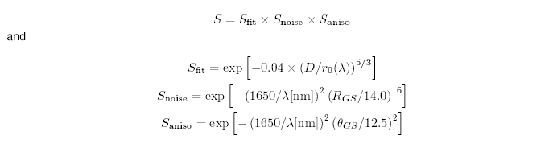
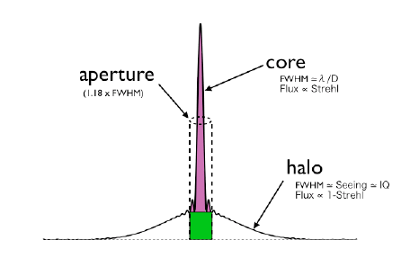

| |
Integration Time Calculator - Altair Properties |
The ability of the AO system to correct the wavefront depends on the brightness and off-axis angle of the wavefront reference source (the AO "guide star"). The Strehl ratio of the AO-corrected core is approximated in the ITC by:

where Sfit is the Strehl due to the system fitting error (i.e. limited number of actuators), Snoise is the Strehl loss due to the limited number of photons from the guide star and Saniso is the Strehl loss due to anisoplantism. RGS is the R-band guide star magnitude and thetaGS is the off-axis angle in arcsec.
The total signal from a point source is the sum of the AO-corrected core and the uncorrected (seeing-limited) halo. For moderate or high Strehl ratios the core dominates, for poor correction (low Strehl) the halo dominates. As in the non-AO case, the ITC defaults to an "optimum" aperture which gives a reasonable approximation of the best S/N ratio; we have taken this to be 1.18 * FWHMAO, where FWHMAO is the width of the corrected core:



Last update August 29, 2003; Francois Rigaut and Phil Puxley